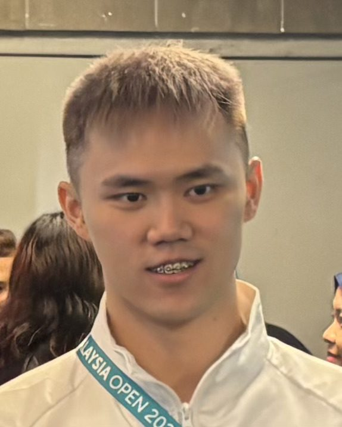
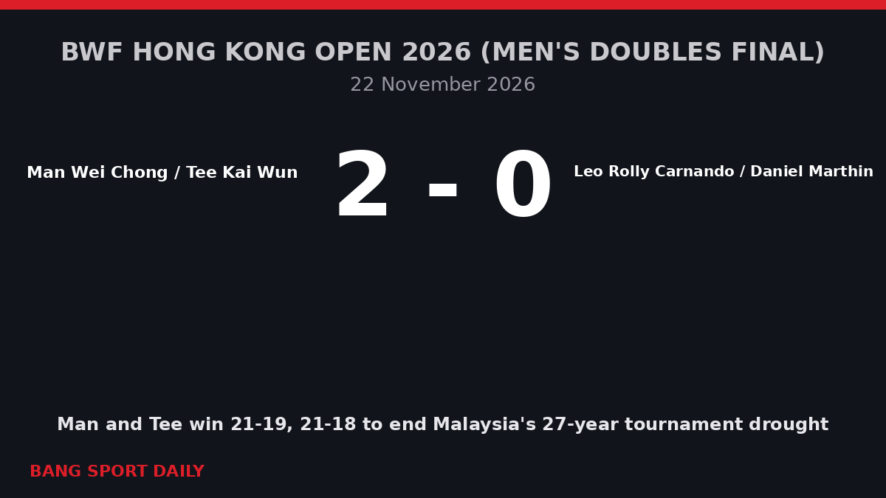

Man Wei Chong and Tee Kai Wun End Malaysia's 27-Year Hong Kong Open Men's Doubles Title Drought
The Malaysian duo defeated Indonesia's Carnando and Marthin in straight games to claim their second BWF World Tour title of 2026.

What happened
Malaysian men's doubles pair Man Wei Chong and Tee Kai Wun defeated Indonesia's Leo Rolly Carnando and Daniel Marthin 21-19, 21-18 to capture the Hong Kong Open title at Kai Tak Arena on Sunday, 22 November 2026. The world No. 9 pair required 38 minutes to wrap up the Super 500 crown in straight games.
The final capped a testing run through the draw for the eighth seeds. On Saturday, Man and Tee secured their final berth by defeating India's world No. 6 pair and fifth seeds, Satwiksairaj Rankireddy and Chirag Shetty, 21-18, 21-19 in a 44-minute semi-final. Carnando and Marthin, ranked 18th in the world, had reached Sunday's showdown after eliminating South Korea's Kang Min-hyuk and Lee Jong-min 21-18, 21-11.

Why it is being talked about
The victory ended Malaysia's 27-year drought in the men's doubles event at the Hong Kong Open. Prior to Sunday, the last Malaysian pair to lift the men's doubles trophy at the tournament was Cheah Soon Kit and Yap Kim Hock in 1999.
The triumph also marked Man and Tee's second BWF World Tour title of the 2026 season. In October, the duo claimed the Super 750 French Open championship, underlining their progression against higher-ranked opposition during the second half of the calendar.
Key facts and numbers

- 27 years: The elapsed time since Malaysia's last men's doubles title at the tournament, won by Cheah Soon Kit and Yap Kim Hock in 1999.
- 38 minutes: The length of Sunday's final at Kai Tak Arena.
- US$39,500: The prize purse earned by Man and Tee as champions (approximately RM162,551), while the Indonesian runners-up collected US$19,000 (RM78,189).
- 2-1: The updated head-to-head record for Man and Tee against Carnando and Marthin across three career encounters.
- 2: World Tour titles won by the Malaysian pair in 2026, following their Super 750 success in France.
What happens next
Despite collecting two World Tour trophies in two months, Man and Tee will miss the season-ending US$3.5 million BWF World Tour Finals in Hangzhou, China, scheduled for 9 to 13 December 2026. Only the top eight pairs qualify for the event, subject to a limit of two entries per nation. Man and Tee entered the tournament ranked 24th in the Finals qualifying standings, making Sunday's victory their final World Tour appearance of the 2026 season.